האתר נבנה על ידי עומר אלון
במסגרת פרויקט גמר במחלקה לתקשורת חזותית,
בצלאל אקדמיה לאמנות ועיצוב
הנחיה: בן לב
ייעוץ טכני: צח וינברג
מחזה וטקסטים: חנוך לוין
לחנים: זוהר לוי
שחקנים: ז'רמן אוניקובסקי, ישראל גוריון, יוסי גרבר, תיקי דיין, נחום שליט
